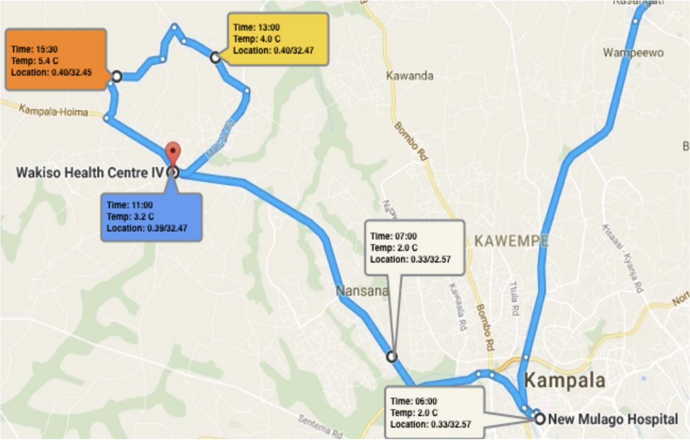
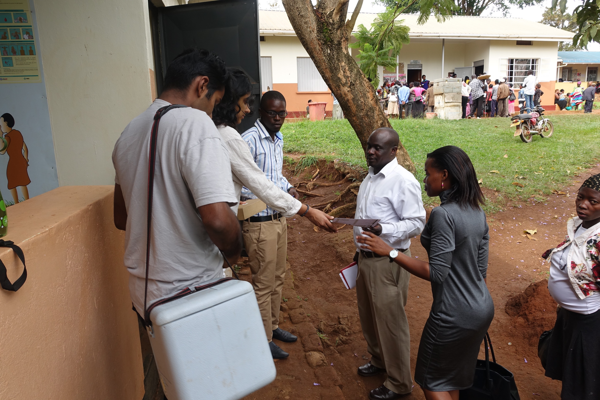

Vaccine Temperature Tracker
Real-time GPS and temperature tracking through an
IoT Integrated Vaccine Carrier
Problem and Background
While global immunization rates have risen significantly in the past decade, 36% of the effective shelf life of six of the most administered vaccines spoil due to inefficient vaccine storage. Cold-chain vaccines must be stored between 2oC - 8oC. However, keeping vaccines at its viable temperature is a challenge for regions with high temperatures that lack the correct refrigeration infrastructure. Furthermore, the cold-chain supply chain proves to be a challenge not only at the site of administration and storage of the vaccines but also during the transportation of the products. Last-mile delivery is usually done by hand, with a health employer carrying the vaccine carrier box to the administration site. No current system allows real-time temperature monitoring to ensure that the vaccines are viable at the final delivery point and to understand where the cold-chain cycle breaks.
My Interest
Before coming to Duke, I enrolled in the Global Health FOCUS program, a year-long live-in and learning community, in order to help understand how the current challenges faced in global health epidemics are being combated. Through a class on designing for the developing world, I was shocked to find out that a majority of health equipment donated to developing nations goes to waste due to a lack of maintenance. I wanted to focus and learn more about how to design in developing economies, with solutions that are technologically savvy but also useful and viable in that environment. At the same time, I wanted to explore the idea of innovation based on user need for a particular community rather than making something new because it is new. During my sophomore year at Duke, I was fortunate to take a class called Transcontinental Design, where I spearheaded the creation of a vaccine tracker alongside a team of engineers from Duke and Makerere University in Kampala. I was later able to travel to Uganda to establish partnerships and test the device through funding from Duke Bass connections and then distinguished as a Pratt Grand Challenge Scholar for my continued contributions. I have also received Red Hat’s 2019 Woman in Open Source Award for the code behind this project.
Product Details
The product is a simple micro-controller with GPS capabilities and an attached temperature sensor. By utilizing the Google Maps API created by Particle Electron, data can be uploaded in real-time to the cloud by connecting to the nearest cellular towers. In Uganda and many developing nations, cell-service is quite prevalent, allowing for this real-time solution to be possible. At the same time, data is first stored on an SD card before being uploaded to the cloud in case of lack of cell service at a given time-point. The temperature probe checks the temperature within the vaccine carrier, stores it on the SD card, and then uploads it to the cloud. This data is then connected to a javascript app that looks like a map and tracks each point of travel along with its temperature of the vaccine carrier. When the vaccine carrier’s temperature is close to out of range, an alert is given. Through the usage of one device per vaccine carrier, a network of temperatures and vaccine movement is created.
Open Soruce Contribution
I created a toolkit platform as part of our solution to visualize what the web app portion of the solution will look like. To make this project possible open sourced libraries from Particle Electron and Adafruit parts were used. All my contributions in creating the hardware code as well as the backend and frontend of the javascript app are available publicly on GitHub.
Field Testing in Uganda
In Spring of 2017, I was able to travel to Kampala, Uganda for two weeks to assess interest in the product as well as conduct a preliminary field test of the product. Through meeting various leads in pharmaceutical companies, heads of NGOs, health officials, and doctors in the area—our team garnered interest in our product and established partnerships with key organizations and stakeholders, allowing for the products’ eventual launch in the region. We were also able to field test the vaccine carrier tracker by using it in action from a health center in Wakiso, Uganda to a delivery spot. Later looking at the data, and proving the efficacy of our real-time tracking In a simulated setting. This was a successful test and proved the usefulness of the device.
Project Images


Previous Project
Schneider Electric
Next Project
Campus Wallet